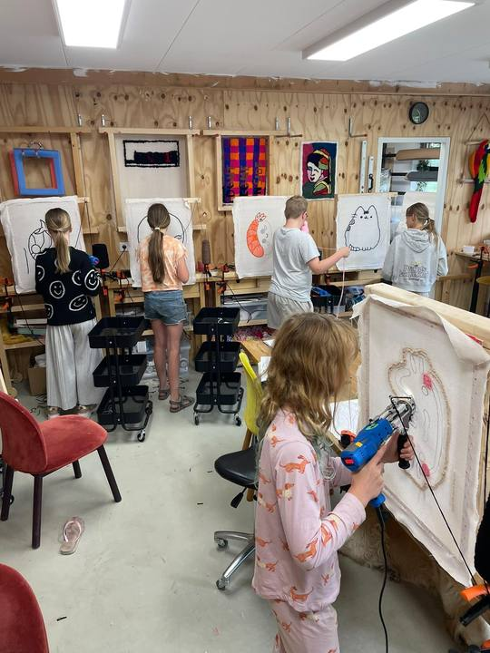
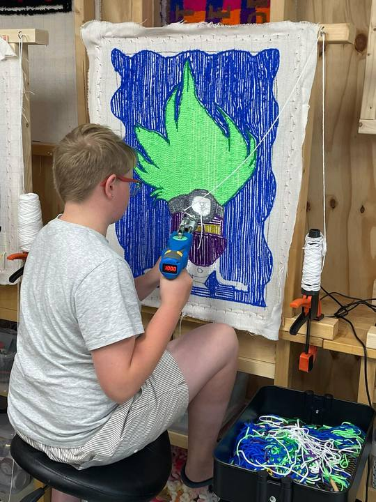
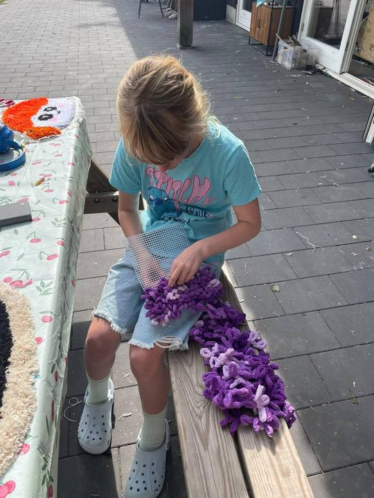
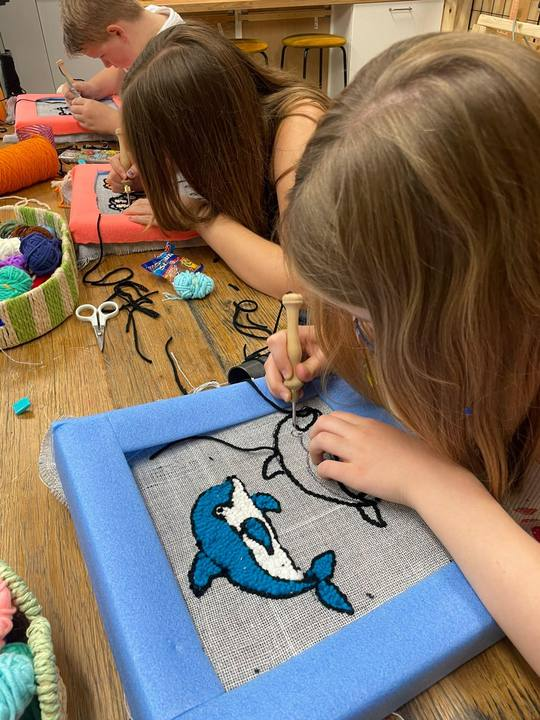
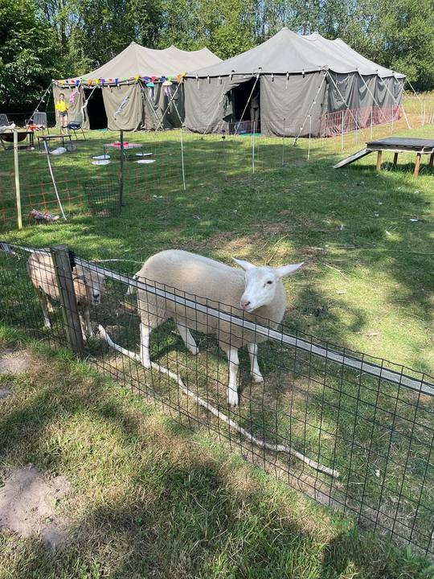
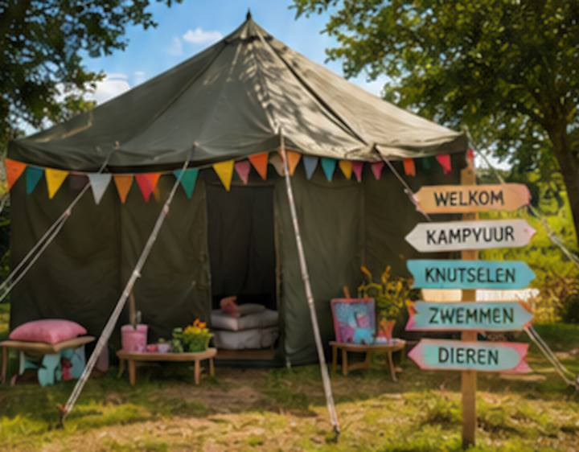

Kinderfeestjes en kampen
Het creatiefste kinderfeestje van Prinsenbeek. Iedereen gaat naar huis met iets wat hij zelf heeft gemaakt.
Welk feestje kies jij?
Alle feestjes duren ongeveer 1,5 uur. De jarige krijgt na afloop een klein cadeautje.

Tofste tuftfeestje
Vanaf 11 jaar · max. 6 kinderenTuft je eigen kleedje met een echte tuftgun. Best een beetje moeilijk, daarom in een kleine groep, zodat iedereen met een mooi kleedje naar huis gaat.
€ 35 p.p.
Fluffy feestje
Max. 10 kinderenMaak je eigen tasje of kussen van zacht puffy lusgaren. Je kiest zelf je kleur. Veilig en kindvriendelijk: geen scherpe onderdelen.
€ 27,50 p.p.
Punch party
Max. 10 kinderenLeer punch needlen en maak een leuke patch. Een hobby die je thuis makkelijk verder kunt doen.
€ 25 p.p.Zo ziet je feestje eruit
- Drinken met feestcakeJe komt met al je vriendinnen en vrienden naar het SoSilly-atelier.
- Kleur of ontwerp kiezenWe vertellen wat jullie gaan doen en dan gaan we meteen beginnen.
- MakenNa ongeveer 1,5 uur is je kleedje, tasje of patch af.
- Buiten spelenDaarna lekker buiten spelen en bij de schaapjes kijken.
Afsluiten met een volle buik?
Kies erbij voor pannenkoeken of een broodje knakworst. Een luxe feesttaart kan ook: laat papa of mama even appen.

Creatief kamp, 8 t/m 13 jaar
Dagen vol creativiteit, buitenleven en gezelligheid op ons eigen terrein in Prinsenbeek, met atelier en dieren. Kinderen komen thuis met hun zelfgemaakte kunstwerken.
- Tuften, punch needle en nog veel meer DIY
- Slapen in je eigen tent bij de schapen
- Dieren van de boerderij verzorgen en knuffelen
- Zwemmen, bingo, suikerspinnen maken en meer
€ 135 all-in
€ 375 all-in
€ 395 all-in
Inclusief eten, drinken, overnachtingen en activiteiten. Maximaal 8 kinderen per kamp: vol is vol.
Plek reserveren
Plek reserveren of een vraag?
Stuur ons een appje, dan laten we weten welke data er nog vrij zijn. We reageren meestal snel.
App of bel ons gerust
Voor workshops, kinderfeestjes, kampen, kleden op maat en vragen over materialen.